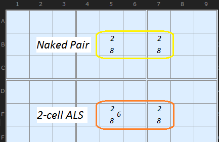
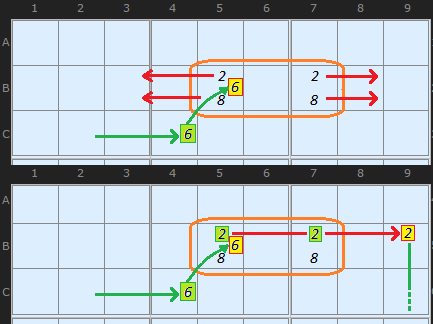
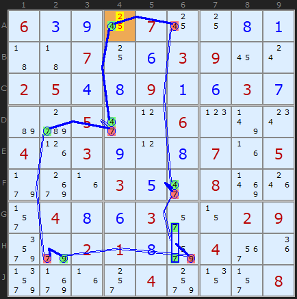
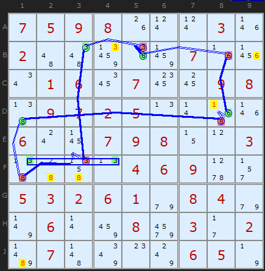
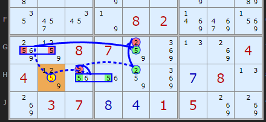
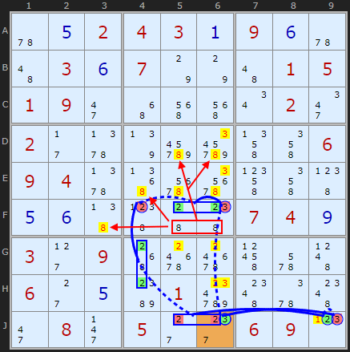

SudokuWiki.org
Strategies for Popular Number Puzzles
AIC with ALSs

A Locked Set is a group of cells (that can all see each other) of size N where the number of candidates in those cells is equal to the size of the group. That is N cells contain N candidates. A solved cell or a clue is a Locked Set where N=1, but such a cell is not useful. The smallest useful Locked Set is a Naked Pair (where N=2) as in the [2,8] set in the diagram. The next smallest Locked Set is a Naked Triple (N=3) and so on.
An Almost Locked Set (ALS) is N cells containing N+1 candidates. In the context of Alternating Inference Chains in this solver, an ALS is of size N=2 and the number of different candidates in those cells is 3, although bigger ALS groups are possible. So an ALS of size 2 will be a two Conjugate Pairs plus one other candidate. In the diagram above the [2,8] pair are joined by a stray 6 which stops it being a useful Naked Pair.

Lets continue with this ALS.
While solving a puzzle I am hunting around for Inference Chains and perhaps I find my chain turns ON the 6 in cell C4. That will remove all other 6s in the box including the 6 in our ALS. If that 6 is OFF then we create an on-the-fly Naked Pair.
Now, a Naked Pair eliminates candidates in the row or column (or box) it is aligned on so we can use this elimination property as part of our chain. This is the trick! By removing the 6 in B5 we fix 2 and 8 into those two cells so we can look along the row at other 2s and 8s and turn them OFF. This I do in cell B9. From there I can continue the inference chain. You get two cracks of the whip: check both branches - the 2s and the 8s in the pseudo Naked Pair.

Ultimately we use Nice Loop Rule 2 to place 4 in A4
AIC on 4 (Discontinuous Alternating Nice Loop, length 12):
-4[A4]+4[D4]-7[D4]+7[D2]
-7[H2]+9[H2]-9[H6]+7{H6|G6}
-7[F6]+4[F6]-4[A6]+4[A4]
- Contradiction: When 4 is removed from A4 the chain implies it must be 4 - other candidates 2/5 can be removed

This second example uses a chain to kill off-chain candidates, which is Nice Loop Rule 1. The ALS is in {F1,F4} and consists of [1/3/8] and [1/3] respectively. We turn off the extra candidate, 8 in F1 to enable the Naked Pair to be formed.
Alternating Inference Chain
AIC Rule 1: -3[B5]+6[B5]-6[B8]+6[D8]-8[D8]+8[D1]-8[F1]+3{F1|F4}-3[F3]+3[B3]-3[B5]
- Off-chain 6 taken off B9 - weak link: B5 to B8
- Off-chain candidates 1 taken off cell D8, link is between 6 and 8 in D8
- Off-chain 8 taken off F2 - weak link: D1 to F1
- Off-chain 8 taken off F3 - weak link: D1 to F1
- Off-chain 8 taken off J1 - weak link: D1 to F1
- Off-chain 3 taken off B4 - weak link: B3 to B5
AIC Rule 1: -3[B5]+6[B5]-6[B8]+6[D8]-8[D8]+8[D1]-8[F1]+3{F1|F4}-3[F3]+3[B3]-3[B5]
- Off-chain 6 taken off B9 - weak link: B5 to B8
- Off-chain candidates 1 taken off cell D8, link is between 6 and 8 in D8
- Off-chain 8 taken off F2 - weak link: D1 to F1
- Off-chain 8 taken off F3 - weak link: D1 to F1
- Off-chain 8 taken off J1 - weak link: D1 to F1
- Off-chain 3 taken off B4 - weak link: B3 to B5
Enchancements December 2025

AIC on 5 ((w.Groups) Discontinuous Alternating Nice Loop, length 8):
+5[H2]-5[G1|G2]+5[G5]-2[G5]+2[H5]-2[H3]+5{H3|H4}-5[H2]
- Contradiction: When H2 is set to 5 the chain implies it cannot be 5 - it can be removed

In Hodoku's example the chain is coming in from +3 in J6 to knock off the 3 in F6. Using the 2s in F56 which are now necessary for those cells, the chain continues to -2F4 and onwards before finishing on J9 where it started.
There are already many off-chain eliminations of 2s and 3s. Strictly speaking the weak link between F56 and F4 is on 2 but there are no 2s to remove off-chain. But because we know 2 must exist in F56 so to must 8. That allows eliminations of 8 in every cell that can see it. The red box and arrows shows the pair part eliminations.
Note: To view this example it is necessary to go to the 7th out of 10.
Comments
Email addresses are never displayed, but they are required to confirm your comments. When you enter your name and email address, you'll be sent a link to confirm your comment. Line breaks and paragraphs are automatically converted - no need to use <p> or <br> tags.
... by: Himself
... by: Ymiros
Specifically for N=2 this would be a set of 2 digits that within a specific unit have only 2 possible positions, but one of them is allowed to have a 3rd possible position within that unit so if that 3rd possibility gets eliminated we can get rid of all other candidates from the hidden pair and possibly continue with a strong link from there.
... by: tebo
... by: Robert
An AIC with "almost locked sets" and also "almost fish" can solve the "unsolvables" #92 and #115 (and possibly others - I don't have all the unsolvables in my database).
A fish is basically the same thing as a locked set (which is itself the same thing as a hidden locked set).
If you think of a "fish" as consisting of "base sets" and "cover sets", where each set contains nine candidates, one of which must be true, then there are four kinds of such sets of candidates:
row-val: the nine candidates occurring in a particular row and with a particular value, but occurring in different columns.
col-val: the nine candidates occurring in a particular column and with a particular value, but occurring in different rows.
blk-val: the nine candidates occurring in a particular block and with a particular value, but occurring in different cells within that block.
row-col: the nine candidates occurring in a particular row and a particular column (so a cell), but having different values.
So a "fish" is then a group of base sets, and a group of cover sets, the same number of each type. If all the candidates in the base sets that have not already been eliminated, also occur in the cover sets, then any candidates remaining in the cover sets but outside the base sets, can be eliminated.
If base sets are row-cols with the same row and different columns (so cells), and the cover sets are row-vals with the same row and different values, the "fish" is a locked set (within a row). Same idea for columns and blocks.
If base sets are row-vals with the same row and different values, and the cover sets are row-cols with the same row and different columns, the "fish" is a hidden locked set (within a row). Same idea for columns and blocks.
If base sets are row-vals with the same value and different rows, and the cover sets are col-vals with the same value and different columns, then this is a traditional fish. Same idea with rows and columns switched.
So since there is really no conceptual difference between a locked set, a hidden locked set, and a fish, the concept of "almost locked sets" in an AIC extends to the other two as well. Hidden locked sets are not so important, because if there is an "almost hidden locked set", there is also a conjugate "almost locked set". But the "almost fish" are not redundant with "almost locked sets" in an AIC.
... by: Robert
In my database of 235 "difficult" puzzles (of which 166 can already be solved), this does not get me any additional solved puzzles. However, it does get a small number of additional eliminations - just not enough to solve fully the puzzles. So I think the idea of an "almost fish" being used as a link in an AIC is valid, although in practice it may not be found very often. (It's actually found quite a lot in my sample, but most of the eliminations I get would eventually have been found anyway by other methods.)
I am now tending to use the terminology "dynamic locked set" or "dynamic fish" instead of "almost locked set" or "almost fish", to allow for their more general use in a forcing net. It can be that there are multiple extra candidates preventing the existence of a locked set or a fish, but following the implications of the forcing net, those multiple extra candidates bring the locked set or fish into existence (conditional on the initial assumption behind the forcing net).
... by: Robert
The most obvious one would be to allow ALSs with more than two cells and more than three values. The description above is quite general, but from the comments, "In the context of Alternating Inference Chains in this solver, an ALS is of size N=2 and the number of different candidates in those cells is 3, although bigger ALS groups are possible." I take it the implementation in the solver is limited to two-cell ALSs. The current "unsolvable", #461, can be solved if larger ALSs are allowed.
There is another possible generalisation though. Suppose you have an AALS, two cells with four values. You begin by assuming some candidate somewhere is "on", and follow the implications through weak and strong links. If *two* of the values in the AALS are eliminated, then (conditional on the initial assumption) it becomes an ALS, and we can draw further inference by eliminating the two values in other cells in the same unit. This is even more likely to occur if we move to a "forcing net" way of doing things instead of a linear chain (related to the "AICs with Exotic Links" topic). Unsolvables #411 and #412 can be solved in this way.
I have a database of 235 advanced puzzles (which cannot be solved using naked/hidden singles/pairs/triples/quads, box-line reduction and pointing pairs/triples), many of which have come from this site, including the unsolvables, but some from other sources. I can now solve (with my own solver) 166 of them. 15 of those require a "forcing net" technique, sometimes including the generalisation of the ALS technique as described above. However, my "forcing net with dynamic LS" algorithm is so slow it is painful - I need to improve it.
... by: Nono
the last solver version 1.95 does not eliminate the 8 in J1.
No problem for good sudoku players !
... by: Str8tsFan
(1) Using the link to the solver leads to a sudoku with a tiny little difference: B9 has an additional candidate 6, which is missing at the example. At the solver this candidate will be eliminated with the very same example:
"- Off-chain candidate 6 taken off B9 - weak link: B5 to B8"
(2) What about the candidate 8 at J1? As far as I can understand the theory, the weak link "D1 to F1" should not only eliminate the 8s at F2 and F3 (weak link in same box) but also the 8 at J1 (weak link in same column). More interesting: the solver doesn't eliminate that 8 at J1 either. Why? Did I make any mistake, or is it a flaw of the solver? As far as I understood, a weak link can be part of two entities (box and row or box and column) and thus should be able to eliminate candidates at both entities, maybe the solver fails to check the second entity?
... by: Mr Turner
... by: Mr Archibald
the first three in a line on rows 1,2 is the some as the last six on row 3. this can work upsidedown and backtofront and sideways.
a b c d e f g h i
i h g f e d c b a
d e f a b c i h g